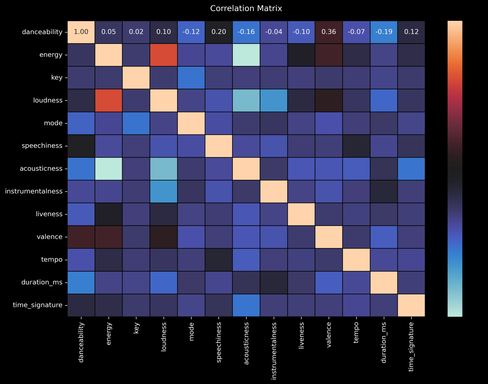
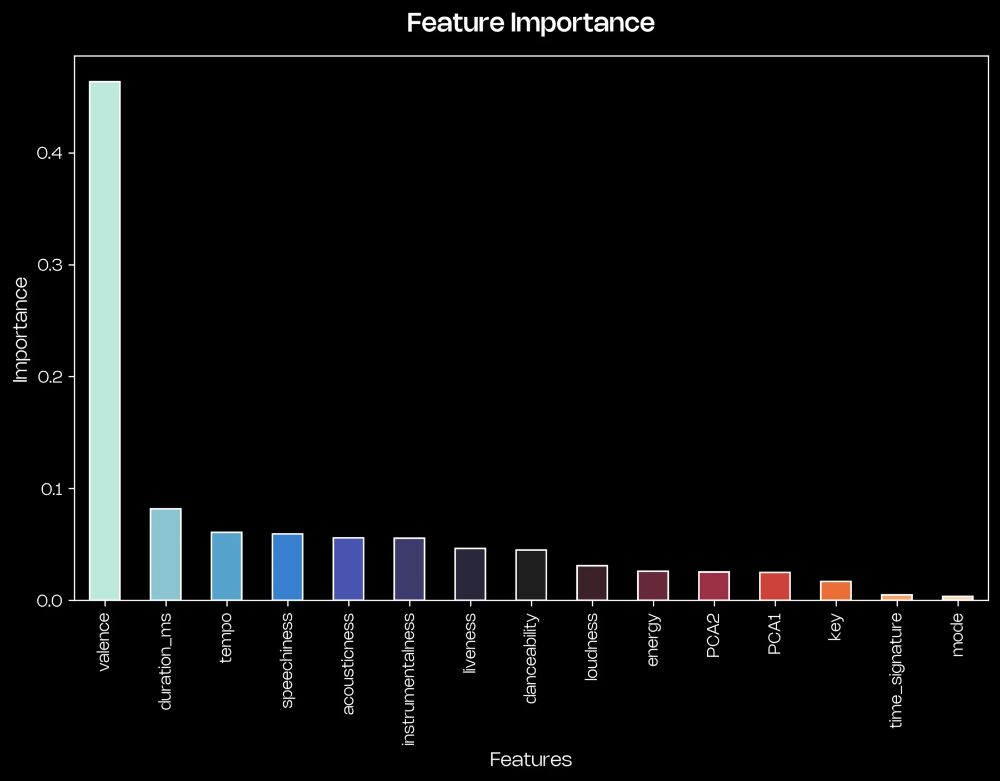
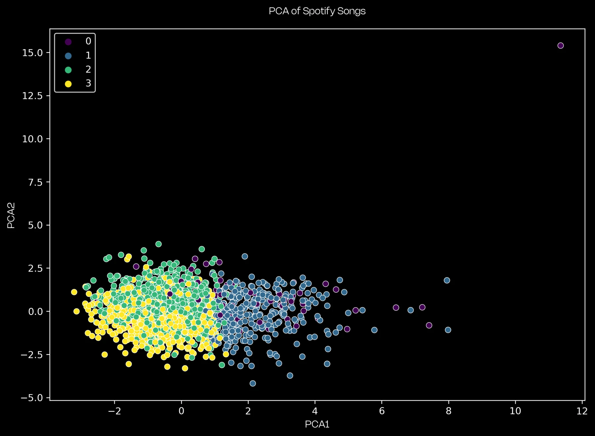
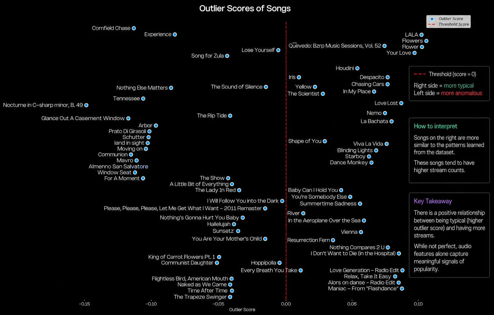

Introduction
In this project, I explored whether audio features alone can reveal patterns associated with highly streamed songs on Spotify. Instead of directly predicting popularity, I analyzed how successful songs behave in feature space and developed a model to identify tracks that align with those patterns.
The Challenge
Understanding what makes a song popular among millions of tracks is complex. Popularity is influenced by many external factors, but this project focuses strictly on whether audio features alone contain meaningful signals.
The Approach
An unsupervised machine learning approach using Isolation Forest to model the structure of songs based on audio features, and identify which tracks fall within or outside the learned distribution of known songs.

Process
01
Data Collection
Gathered Spotify's most streamed songs along with their audio features.
02
Data Preparation
Cleaned, merged, and normalized datasets to create a consistent feature space.
03
Exploratory Analysis
Analyzed correlations and feature distributions to understand relationships between audio characteristics.
04
Modeling
Trained an Isolation Forest model to learn the distribution of audio features and detect songs that align with or deviate from this learned structure.
Key Findings
Valence
Most influential feature in the model’s feature importance analysis
Threshold
Score = 0 served as a practical dividing point between less typical and more pattern-aligned songs
Qualitative Test
In custom playlists, many globally recognized songs consistently appeared on the model’s “more typical” side


Results
0.0
Threshold used to separate less typical vs more pattern-aligned songs
Mixed Playlist
Included globally known, niche, and instrumental tracks for qualitative evaluation
Pattern Recognition
Popular songs frequently appeared closer to the learned distribution
Rather than directly predicting popularity, the model created a one-dimensional similarity spectrum based on audio features. Songs with scores above the threshold (score ≥ 0) were generally closer to the learned structure derived from Spotify’s broader dataset.
When tested using a manually curated playlist containing both globally recognized hits and lesser-known tracks, many culturally recognizable songs appeared on the more pattern-aligned side of the spectrum. While exploratory rather than statistically conclusive, this supported the hypothesis that many successful songs share measurable audio similarities.
